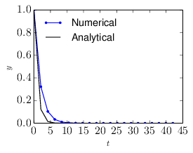

is the speed of light in vacuum. In an electromagnetic wave, Ez is
c times of Bz in SI units. To make the two variables in the above equation takes
similar magnitude, define Ez = Ez∕c. Then using (Ez,By) as variables, the above
equations are written
is the speed of light in vacuum. In an electromagnetic wave, Ez is
c times of Bz in SI units. To make the two variables in the above equation takes
similar magnitude, define Ez = Ez∕c. Then using (Ez,By) as variables, the above
equations are written
Physics becomes concrete, impressive, and fun when we compute it numerically and visualize the process by graphics. Computational physics are primarily about numerically solving three types of partial differential equations (PDEs), namely hyperbolic, parabolic, and elliptic PDEs, which respectively correspond to advection (wave) equations, diffusion equations, and Poisson’s equations.
In one-dimensional case, an advection equation takes the following form:
|
| (1) |
where c is a constant. A natural choice of differencing scheme for the above equation is
|
| (2) |
which however is unconditionally unstable (tested by me numerically. the stability analysis can prove that the above scheme is unconditional unstable[2]). The Lax-Friedrichs scheme modifies the above scheme to the following form:
|
| (3) |
which is stable if the CFL condition is satisfied. However this scheme introduces heavy damping in the solution, as is shown in Fig 1. The Lax-Friedrichs scheme is an explicit scheme. Let us try implicit schemes. One natural choice of implicit scheme is of the following form:
|
| (4) |
which is called the Crank–Nicolson implicit scheme. An implicit scheme usually requires that an linear equations system be solved because the unknown future values are usually coupled together. The scheme (4) can be organized in the following form
|
| (5) |
which is a traditional equation system. Figure 1 compares the results calculated by the Lax-Friedrichs scheme and the Crank–Nicolson scheme, which shows that no damping is introduced by the Crank-Nicolson scheme.
A wave equation in one-dimension takes the following form:
|
| (6) |
which is a second order differential equation and can be written as two coupled advection equations. Define a new function ξ by
|
| (7) |
Then Eq. (6) can be written as
|
| (8) |
which can be simplified as
|
| (9) |
Equation (7) and (9) are two couple advection equations.
For Maxwell’s equation in one-dimension case, there are two independent TEM modes, one of which is described by
|
| (10) |
|
| (11) |
where c = 1∕ is the speed of light in vacuum. In an electromagnetic wave, Ez is
c times of Bz in SI units. To make the two variables in the above equation takes
similar magnitude, define Ez = Ez∕c. Then using (Ez,By) as variables, the above
equations are written
|
| (12) |
|
| (13) |
Similar to the case of advection equation, the following simple differencing scheme for the vacuum TEM equations (12) and (13):
|
| (14) |
|
| (15) |
is unstable (tested numerically by me). The Lax scheme modifies the above scheme to the following form:
|
| (16) |
|
| (17) |
I tested this and found it induces heavy damping as it does in the case of advection equation.
Let us try the Crank-Nicolson implicit scheme:
|
| (18) |
|
| (19) |
The above differencing scheme can be organized in the following form:
|
| (20) |
|
| (21) |
which is a linear equation system for (Byi(n+1),Ezi(n+1)) with i = 1,2,…Nx, where Nx is the number of grids in the x direction. This linear system is solved by using LU decomposition of the coefficient matrix (the LU decomposition can be viewed as the matrix form of Gaussian elimination.). The evolution of the wave form calculated by this scheme is plotted in Fig. 2.

The stencil used in the explicit, implicit, and Crank–Nicolson implicit method is given in Figure (3).
This part is to be continued.
Poisson’s equation is written
|
| (22) |
where S is a known source term. In Cartesian coordinates and in the 2D case, the above equation is written
|
| (23) |
Consider solving the above equation in a rectangular domain with xa ≤ x ≤ xb and ya ≤ y ≤ yb and with φ = 0 on the boundary.
Discretize x as xi = xa + (i + 1)Δx, where Δx = (xb − xa)∕(M + 1) and i = 0,1,2,…,M − 1. Similarly, discretize y as yj = ya + (j + 1)Δy, where Δy = (yb − ya)∕(N + 1) and j = 0,1,2,…,N − 1. Then the above equation can be discretized by using the following finite difference:
|
| (24) |
where φi,j = φ(xi,yj) and Si,j = S(xi,yj). Equation (24) can be arranged as
|
| (25) |
where a = 1∕Δx2, b = 1∕Δy2, and c = −. This is a 5-points stencil, as is illustrated in Fig. 4.
In this discritization, the boundary conditions are written as φ−1,j = φM,j = 0 and φi,−1 = φi,N = 0.
In order to solve the linear equation system (25), we prefer to formulate it in a matrix form. In order to do this, we need to order the 2D discrete unknowns φi,j in a 1D sequence. Two natural ordering schemes are the row-ordering and the column ordering. I choose the row ordering, as is illustrated in Fig. 5.
Using the above ordering, the linear equation system (25) for the special case of a 3 × 3 mesh is written as the following matrix form:
 | (26) |
where all the blank elements are zeros. This 9 × 9 matrix is sparse but is not tridiagonal. Each row of the matrix corresponds to one difference equation at a grid point. It is not difficult to generalize the above 9 × 9 matrix to a general MN ×MN matrix. The general pattern is that those rows that corresponds to inner grid points have the following pattern (…,b,…,a,c,a,…,b,…), where c is on the diagonal location and the distance between b and c is M. For those rows that correspond to boundary grid points, some b and/or a can be absent. Specifically, (1) the left a is absent for all the rows corresponding to the left boundary grids; (2) the right a is absent for all the rows corresponding to the right boundary grids; (3) the left b is absent for all the rows corresponding to bottom boundary grids; (4) the right b is absent for all the rows corresponding to the top boundary grids. The following Fotran code illustrates how to set up the matrix elements for this kind of sparse matrix:
For the particular source term given by
|
| (27) |
then
|
| (28) |
satisfies the equation and the boundary condition ψ = 0 at xa = 0, xb = 1, ya = 0, and yb = 1. Therefore the above expression is an analytic solution to the problem. Figure 6 compares the numerical solution with the analytic one, which indicates the two results agree with each other, and thus verifying the correctness of the numerical solution.
For the following ordinary differential equation:
|
| (29) |
where a is a positive constant, with the initial condition y(0) = y0, the analytic solution is given by
|
| (30) |
which is a monotonically decreasing function of t. Let us try to solve this initial value problem numerically. Discritizing time as tn = nΔt with Δt > 0, we use the following explicit differencing scheme:
|
| (31) |
i.e.,
|
| (32) |
where y(n) = y(tn) and y(n+1) = y(tn+1). If we choose a large time-step Δt with Δt > 2∕a, then |1 − Δta| > 1 and the above scheme gives a numerical solution with amplitude increasing with time, instead of decaying. This is totally different from the analytic solution, which indicates the numerical solution is wrong in this case. This kind of wrong numerical solution is called a numerical instability. An example is shown in Fig. 7.
Let us consider the following implicit scheme
|
| (33) |
(where the right-hand side is evaluated at the future time time), i.e.,
|
| (34) |
Note that no matter how large the time step-length Δt is, the above scheme always give a solution which is decreasing with time, i.e., no numerical instability appears. An example is shown in Fig. 8.

If a one-step explicit scheme is unstable, then the corresponding implicit scheme is stable. This is because that an implicit scheme corresponds to a time-reversed version of the corresponding explicit scheme.
Taylor expansion of f(x) at x = xi is written as
|
| (35) |
This method is very similar to and often confused with the Runge-Kutta method. Consider the following differential equation
|
| (36) |
A natural discretized form that is time-centered would be
|
| (37) |
Unfortunately the presence of yn+1 on the right-hand side makes this scheme implicit, and thus a direct solution is possible only for some special cases (e.g. f(y) is a linear function of y). Generally, we need to use iterations to solve the above equation. A convenient initial guess is yn+1 ≈ yn. If we iterate for only twice, i.e.,
 | (38) |
|
| (39) |
Then this is the predictor-corrector method (also called Heun’s method). This method consists of a guess for yn+1 based on the Euler method (the Prediction) followed by a correction using trapezoidal rule.
If we iterate until convergence, then this is a general implicit scheme.
Spectral methods refers to methods of using linear combination of global basis functions to approximate a unknown function. Here “global” means that the basis functions extending over the whole spatial domain of interest, i.e., has a support as large as the whole domain of interest (contrast to the finite element method, which use local basis functions). Here we consider Fourier spectral method, which uses trigonometric functions as basis functions. Consider the following two-point boundary value problem:
|
| (40) |
with the boundary condition ψ(x = L) = ψ(x = 0), where V (x) and S(x) are known functions. Expand ψ(x) in terms of the Fourier basis functions:
|
| (41) |
where n are unknown coefficients. Substitute this expression into the left-hand side of Eq. (40), we obtain
|
| (43) |
We want the residual to be as small as possible in the whole domain of interested. We need to define how to measure the smallness of the residual. A general method is to choose some “test functions” and take the inner product of the test functions with the residual over the whole domain. Then the inner product is used to measure the smallness of the residual. Different spectral methods are classified by the different “test functions” chosen for the inner product.
In the Pseudo-spectral method, the test functions are chosen to be δ(x−xm), where δ is the Dirac-delta function and xm with m = 0,1,2,…,N − 1 are special spatial points chosen for a set of basis functions. These points are called collocation points and differs for different basis functions used. For Fourier basis functions the collocation points are points with uniform interval given by xm = mL∕N with m = 0,1,2,…,N − 1. Performing the inner product ∫ 0L(…)δ(x − xm)dx on the residual and demand the result to be zero, we obtain
|
| (44) |
which can be organized as
|
| (45) |
where m = 0,1,…N − 1. Equation (45) is a linear equation system for the expansion coefficients n. Since taking the inner product with a Dirac-delta function δ(x − xm) correspond to choosing a particular spatial point xm, the above equation is actually demanding that the approximate function satisfies the original differential equation exactly on the set of collocation points.
Choose the set of test functions as exp(−2πimx∕L) with m = 0,1,…,N − 1. Perform the inner product of the residual with the test functions exp(−2πimx∕L), i.e., ∫ 0LR exp(−2πimx∕L)dx, and demand the result to be zero, yielding
|
| (46) |
where use has been made of
with δnm is the Kronicle-delta function, and
|
| (47) |
Direct evaluating the integration of the source term as appearing in Eq. (46) involves N operation for each value of m and thus total N2 operations are needed. The computational efficiency can be improved by first expanding S(x) in terms of the basis function (as what is done for ψ):
Then the integration of the source term reduces to Ŝm. Then equation (46) is written
|
| (48) |
Since computing Ŝm with m = 0,1,…,N − 1 using FFT involves only N log N operations, this method is more efficient than directly evaluating the integration. Similar situation apply to the computation of V mn. The matrix V mn depends on m and n through the combination (n − m). Since both m and n are in the range [0 : N − 1], the range of (n − m) is also in [0 : N − 1]. Therefore the matrix V mn has N independent matrix elements. Computing each one of these N elements by directly evaluating the integration (47) involves N operations. Therefore, to obtain all the N independent elements, the number of operations is N2. The same method used to compute the source term can be applied to compute V mn, which reduces the operation number to N log N. Expand V (x) as
then V mn is written as
|
| (49) |
Therefore Eq. (48) is finally written
|
| (50) |
which is a linear equation system for  m with m = 0,1,…,N − 1.
m with m = 0,1,…,N − 1.
 m−n
m−n n in initial value problems
n in initial value problemsEquation (50) can be considered as a stead-state equation of the following time-dependent equation
|
| (51) |
Note that the term ∑
n=0N−1m−n n on the right-hand side of the above equation
involves matrix multification, which involves N2 operations. When solving Eq.
(51) as an initial value problem, where  m is known at the current time
step, there is an efficient way of evaluating ∑
n=0N−1m−n
m is known at the current time
step, there is an efficient way of evaluating ∑
n=0N−1m−n n which avoids
the computationally expensive matrix multification. Note that the term
∑
n=0N−1m−n
n which avoids
the computationally expensive matrix multification. Note that the term
∑
n=0N−1m−n n is actually the Fourier transform of V (x)ψ(x). Thus
an efficient method of computing this term is to first transform
n is actually the Fourier transform of V (x)ψ(x). Thus
an efficient method of computing this term is to first transform  n back
to real space and doing the multification between V (x) and ψ(x) in real
space. Then transform the result back to Fourier space. Since the transform
can be performed by FFT, which involves only N log N operations, this
method is more efficient than directly computing the matrix multification
∑
n
n back
to real space and doing the multification between V (x) and ψ(x) in real
space. Then transform the result back to Fourier space. Since the transform
can be performed by FFT, which involves only N log N operations, this
method is more efficient than directly computing the matrix multification
∑
n m−n
m−n n.
n.
ddd
Ampere’s equation is written
|
| (52) |
Neglecting the ion current, then the above equation is written
|
| (53) |
Using δJe = −en0δue, the above equation is written
 | (54) |
|
| (55) |
Using δue × B0 = −δE, the above equation is written
|
| (56) |
Define βe = μ0ene0, then the above equation is written as
|
| (57) |
|
| (58) |
Faraday’s law is written as
|
| (59) |
Assume B0 is uniform and performing Fourier transformation over the space, equations () and () are written
|
| (60) |
|
| (61) |
Consider the case that B0 is along the z direction and k = k, equation () is written as
|
| (62) |
Using this in Eq. (), yielding
|
| (63) |
|
| (64) |
Assume δ(n) and δ(n) take the following form
 | (65) |
|
| (66) |
[1] Satish Balay, Shrirang Abhyankar, Mark F. Adams, Jed Brown, Peter Brune, Kris Buschelman, Lisandro Dalcin, Victor Eijkhout, William D. Gropp, Dinesh Kaushik, Matthew G. Knepley, Dave A. May, Lois Curfman McInnes, Richard Tran Mills, Todd Munson, Karl Rupp, Patrick Sanan, Barry F. Smith, Stefano Zampini, Hong Zhang , and Hong Zhang. PETSc Web page. 2018. http://www.mcs.anl.gov/petsc.
[2] Richard Fitzpatrick. Computational Physics:An introductory course. Richard Fitzpatrick, 2004.